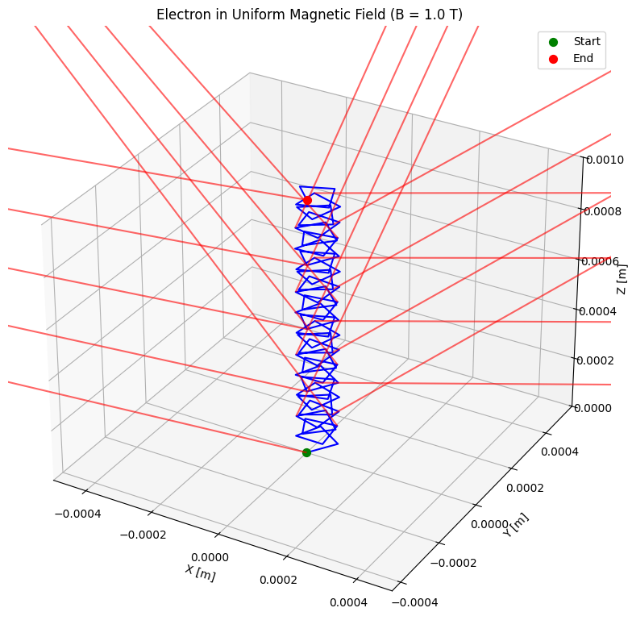
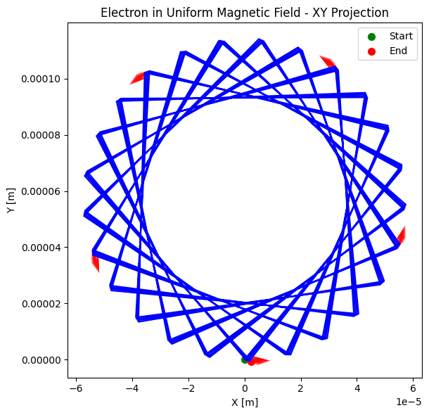
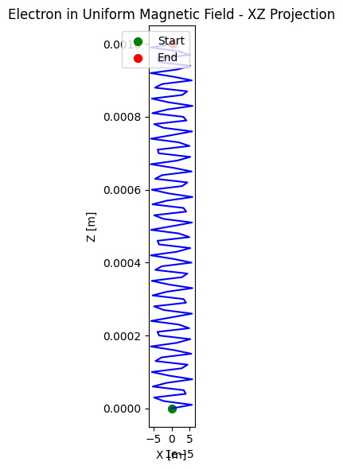
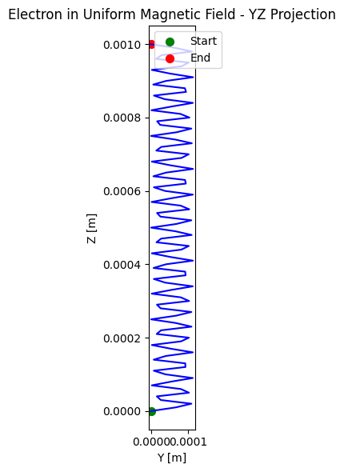
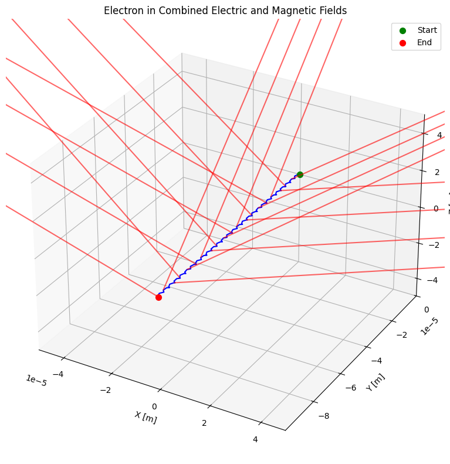
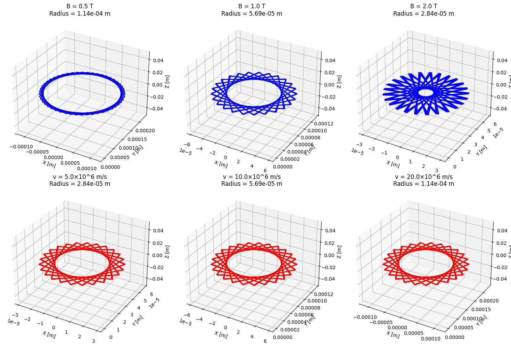
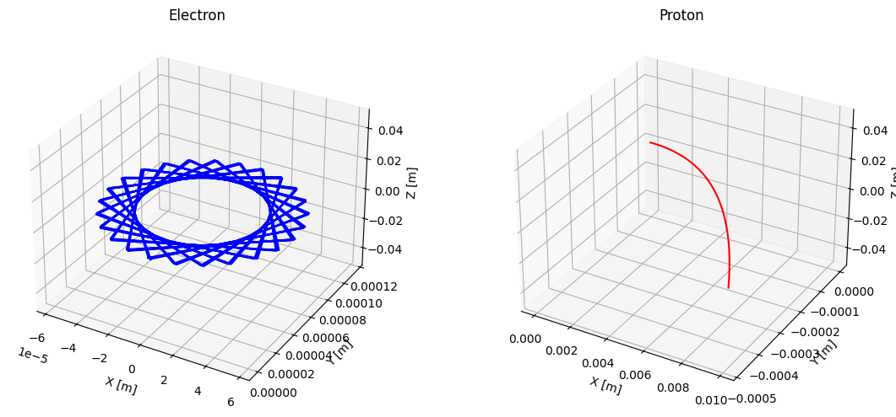
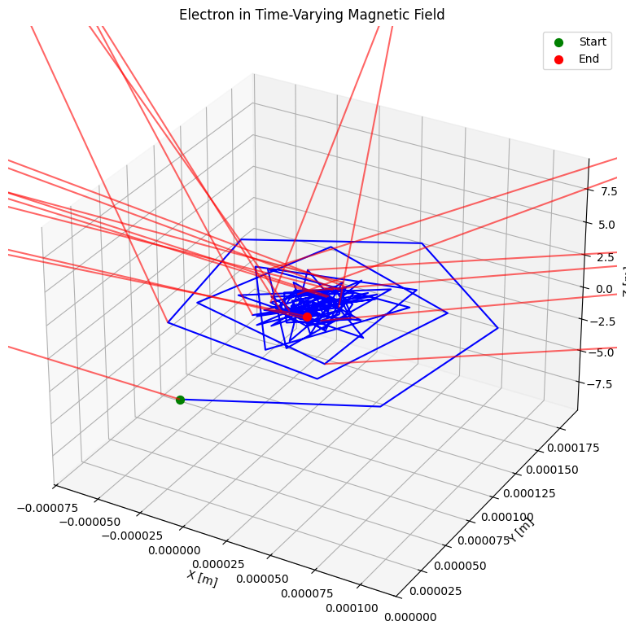

Problem 1
Lorentz Force Simulation: Complete Solution
1. Introduction and Theoretical Background
The Lorentz force, expressed as \(\vec{F} = q(\vec{E} + \vec{v} \times \vec{B})\), governs the motion of charged particles in electric and magnetic fields. This fundamental force is crucial across various scientific and engineering applications.
2. Applications of the Lorentz Force
2.1 Particle Accelerators and Cyclotrons
Particle accelerators use the Lorentz force to control and accelerate charged particles to high energies. In a cyclotron, particles follow spiral paths due to a perpendicular magnetic field while being accelerated by an oscillating electric field, allowing them to reach high energies within a relatively compact space.
2.2 Mass Spectrometers
Mass spectrometers use the Lorentz force to separate ions based on their mass-to-charge ratios. Ions traveling through a magnetic field follow circular trajectories with radii proportional to their masses, enabling precise analysis of chemical compounds.
2.3 Plasma Confinement
In fusion research, magnetic confinement devices like tokamaks use the Lorentz force to contain hot plasma. The charged particles in the plasma follow helical paths around magnetic field lines, preventing contact with container walls.
2.4 Hall Effect Devices
Hall effect sensors detect magnetic fields through the voltage difference created when a current-carrying conductor is placed in a magnetic field, useful in position sensing and current measurement.
2.5 Magnetohydrodynamic Generators
MHD generators convert thermal or kinetic energy directly into electricity using the Lorentz force on a conductive fluid moving through a magnetic field.
3. Python Implementation
Below is the complete Python implementation for simulating charged particle motion under the Lorentz force. The code uses numerical integration to compute trajectories and includes visualization capabilities for different field configurations.
import numpy as np
import matplotlib.pyplot as plt
from mpl_toolkits.mplot3d import Axes3D
from matplotlib.animation import FuncAnimation
from scipy.integrate import solve_ivp
# Constants (SI units)
e = 1.602e-19 # elementary charge (C)
m_electron = 9.109e-31 # electron mass (kg)
m_proton = 1.673e-27 # proton mass (kg)
class ParticleSimulator:
def __init__(self, q=e, m=m_electron, dt=1e-10, total_time=1e-8):
"""
Initialize the particle simulator.
Parameters:
q (float): Charge of the particle in Coulombs
m (float): Mass of the particle in kg
dt (float): Time step for simulation
total_time (float): Total simulation time
"""
self.q = q
self.m = m
self.dt = dt
self.total_time = total_time
self.time_points = np.arange(0, total_time, dt)
def lorentz_force(self, t, state, E, B):
"""
Calculate the Lorentz force: F = q(E + v×B)
Parameters:
t (float): Time (not used but required for solve_ivp)
state (array): [x, y, z, vx, vy, vz]
E (function or array): Electric field vector (Ex, Ey, Ez)
B (function or array): Magnetic field vector (Bx, By, Bz)
Returns:
array: Derivatives [vx, vy, vz, ax, ay, az]
"""
x, y, z, vx, vy, vz = state
# Get field values (they can be functions of position and time)
if callable(E):
E_vec = E(x, y, z, t)
else:
E_vec = E
if callable(B):
B_vec = B(x, y, z, t)
else:
B_vec = B
# Velocity vector
v = np.array([vx, vy, vz])
# Calculate acceleration from Lorentz force: a = q/m * (E + v×B)
a = (self.q / self.m) * (E_vec + np.cross(v, B_vec))
return [vx, vy, vz, a[0], a[1], a[2]]
def simulate(self, initial_position, initial_velocity, E, B):
"""
Simulate the particle trajectory using solve_ivp.
Parameters:
initial_position (array): Initial position [x, y, z]
initial_velocity (array): Initial velocity [vx, vy, vz]
E (function or array): Electric field vector
B (function or array): Magnetic field vector
Returns:
tuple: (t, trajectory) where trajectory is an array of shape (n, 6) for position and velocity
"""
initial_state = np.concatenate((initial_position, initial_velocity))
solution = solve_ivp(
lambda t, y: self.lorentz_force(t, y, E, B),
[0, self.total_time],
initial_state,
method='RK45',
t_eval=self.time_points
)
return solution.t, solution.y.T
def plot_trajectory_3d(self, trajectory, title=None, show_velocity=False):
"""
Plot the 3D trajectory of the particle.
Parameters:
trajectory (array): Array of shape (n, 6) containing position and velocity
title (str): Title for the plot
show_velocity (bool): Whether to add velocity arrows
"""
fig = plt.figure(figsize=(10, 8))
ax = fig.add_subplot(111, projection='3d')
# Extract position
x, y, z = trajectory[:, 0], trajectory[:, 1], trajectory[:, 2]
# Plot trajectory
ax.plot(x, y, z, 'b-', linewidth=1.5)
ax.scatter(x[0], y[0], z[0], color='green', s=50, label='Start')
ax.scatter(x[-1], y[-1], z[-1], color='red', s=50, label='End')
# If show_velocity is True, add velocity arrows at intervals
if show_velocity:
vx, vy, vz = trajectory[:, 3], trajectory[:, 4], trajectory[:, 5]
# Show arrows at intervals
interval = len(trajectory) // 20
if interval < 1:
interval = 1
for i in range(0, len(trajectory), interval):
v_magnitude = np.sqrt(vx[i]**2 + vy[i]**2 + vz[i]**2)
scale_factor = 0.5 / (v_magnitude + 1e-10) # Avoid division by zero
ax.quiver(x[i], y[i], z[i],
vx[i] * scale_factor,
vy[i] * scale_factor,
vz[i] * scale_factor,
color='red', alpha=0.6)
# Set labels and title
ax.set_xlabel('X [m]')
ax.set_ylabel('Y [m]')
ax.set_zlabel('Z [m]')
if title:
ax.set_title(title)
# Set equal aspect ratio
max_range = max([
np.max(x) - np.min(x),
np.max(y) - np.min(y),
np.max(z) - np.min(z)
])
mid_x = (np.max(x) + np.min(x)) / 2
mid_y = (np.max(y) + np.min(y)) / 2
mid_z = (np.max(z) + np.min(z)) / 2
ax.set_xlim(mid_x - max_range/2, mid_x + max_range/2)
ax.set_ylim(mid_y - max_range/2, mid_y + max_range/2)
ax.set_zlim(mid_z - max_range/2, mid_z + max_range/2)
plt.legend()
plt.tight_layout()
return fig, ax
def plot_trajectory_2d(self, trajectory, plane='xy', title=None, show_velocity=False):
"""
Plot the 2D trajectory of the particle.
Parameters:
trajectory (array): Array of shape (n, 6) containing position and velocity
plane (str): Plane to plot ('xy', 'xz', or 'yz')
title (str): Title for the plot
show_velocity (bool): Whether to add velocity arrows
"""
fig, ax = plt.subplots(figsize=(8, 6))
# Extract position based on plane
if plane == 'xy':
x, y = trajectory[:, 0], trajectory[:, 1]
vx, vy = trajectory[:, 3], trajectory[:, 4]
xlabel, ylabel = 'X [m]', 'Y [m]'
elif plane == 'xz':
x, y = trajectory[:, 0], trajectory[:, 2]
vx, vy = trajectory[:, 3], trajectory[:, 5]
xlabel, ylabel = 'X [m]', 'Z [m]'
elif plane == 'yz':
x, y = trajectory[:, 1], trajectory[:, 2]
vx, vy = trajectory[:, 4], trajectory[:, 5]
xlabel, ylabel = 'Y [m]', 'Z [m]'
else:
raise ValueError("Plane must be 'xy', 'xz', or 'yz'")
# Plot trajectory
ax.plot(x, y, 'b-', linewidth=1.5)
ax.scatter(x[0], y[0], color='green', s=50, label='Start')
ax.scatter(x[-1], y[-1], color='red', s=50, label='End')
# If show_velocity is True, add velocity arrows at intervals
if show_velocity:
# Show arrows at intervals
interval = len(trajectory) // 20
if interval < 1:
interval = 1
for i in range(0, len(trajectory), interval):
v_magnitude = np.sqrt(vx[i]**2 + vy[i]**2)
scale_factor = 0.5 / (v_magnitude + 1e-10) # Avoid division by zero
ax.quiver(x[i], y[i],
vx[i] * scale_factor,
vy[i] * scale_factor,
color='red', alpha=0.6)
# Set labels and title
ax.set_xlabel(xlabel)
ax.set_ylabel(ylabel)
if title:
ax.set_title(title)
# Set equal aspect ratio
ax.set_aspect('equal')
plt.legend()
plt.tight_layout()
return fig, ax
def calculate_larmor_radius(self, velocity, B_field):
"""
Calculate the Larmor radius for a particle in a uniform magnetic field.
Parameters:
velocity (float or array): Magnitude of velocity perpendicular to B field
B_field (float or array): Magnitude of magnetic field
Returns:
float or array: Larmor radius
"""
if isinstance(B_field, np.ndarray):
B_magnitude = np.linalg.norm(B_field)
else:
B_magnitude = B_field
if isinstance(velocity, np.ndarray):
v_perp = np.linalg.norm(velocity)
else:
v_perp = velocity
return (self.m * v_perp) / (np.abs(self.q) * B_magnitude)
def calculate_cyclotron_frequency(self, B_field):
"""
Calculate the cyclotron frequency for a particle in a magnetic field.
Parameters:
B_field (float or array): Magnitude of magnetic field
Returns:
float: Cyclotron frequency in Hz
"""
if isinstance(B_field, np.ndarray):
B_magnitude = np.linalg.norm(B_field)
else:
B_magnitude = B_field
return (np.abs(self.q) * B_magnitude) / (self.m * 2 * np.pi)
def calculate_drift_velocity(self, E, B):
"""
Calculate the E×B drift velocity.
Parameters:
E (array): Electric field vector
B (array): Magnetic field vector
Returns:
array: Drift velocity vector
"""
if isinstance(E, np.ndarray) and isinstance(B, np.ndarray):
B_squared = np.linalg.norm(B)**2
if B_squared > 0:
return np.cross(E, B) / B_squared
else:
return np.zeros(3)
else:
return np.zeros(3)
# Example usage and test cases
def run_uniform_magnetic_field_simulation():
"""
Simulate particle motion in a uniform magnetic field.
"""
# Initialize simulator (electron by default)
simulator = ParticleSimulator(q=-e, m=m_electron, dt=1e-11, total_time=1e-9)
# Set up fields
B = np.array([0, 0, 1.0]) # 1 Tesla along z-axis
E = np.array([0, 0, 0]) # No electric field
# Initial conditions
initial_position = np.array([0, 0, 0])
initial_velocity = np.array([1e7, 0, 1e6]) # 10^7 m/s in x direction, 10^6 m/s in z direction
# Run simulation
_, trajectory = simulator.simulate(initial_position, initial_velocity, E, B)
# Calculate theoretical values
v_perp = np.sqrt(initial_velocity[0]**2 + initial_velocity[1]**2)
larmor_radius = simulator.calculate_larmor_radius(v_perp, B)
cyclotron_freq = simulator.calculate_cyclotron_frequency(B)
print(f"Uniform Magnetic Field Results:")
print(f"Larmor radius: {larmor_radius:.6e} m")
print(f"Cyclotron frequency: {cyclotron_freq:.3e} Hz")
# Plot 3D trajectory
simulator.plot_trajectory_3d(
trajectory,
title=f'Electron in Uniform Magnetic Field (B = {np.linalg.norm(B)} T)',
show_velocity=True
)
plt.savefig('uniform_magnetic_field_3d.png', dpi=300, bbox_inches='tight')
# Plot 2D projections
for plane in ['xy', 'xz', 'yz']:
simulator.plot_trajectory_2d(
trajectory,
plane=plane,
title=f'Electron in Uniform Magnetic Field - {plane.upper()} Projection',
show_velocity=(plane == 'xy')
)
plt.savefig(f'uniform_magnetic_field_{plane}.png', dpi=300, bbox_inches='tight')
return trajectory, larmor_radius, cyclotron_freq
def run_combined_em_field_simulation():
"""
Simulate particle motion in combined uniform electric and magnetic fields.
"""
# Initialize simulator
simulator = ParticleSimulator(q=-e, m=m_electron, dt=1e-11, total_time=1e-9)
# Set up fields
B = np.array([0, 0, 1.0]) # 1 Tesla along z-axis
E = np.array([1e5, 0, 0]) # 10^5 V/m along x-axis
# Initial conditions
initial_position = np.array([0, 0, 0])
initial_velocity = np.array([0, 0, 0]) # Starting from rest
# Run simulation
_, trajectory = simulator.simulate(initial_position, initial_velocity, E, B)
# Calculate theoretical drift velocity
drift_velocity = simulator.calculate_drift_velocity(E, B)
print(f"Combined E-M Field Results:")
print(f"Theoretical E×B drift velocity: {drift_velocity} m/s")
print(f"Drift speed: {np.linalg.norm(drift_velocity):.3e} m/s")
# Plot trajectory
simulator.plot_trajectory_3d(
trajectory,
title='Electron in Combined Electric and Magnetic Fields',
show_velocity=True
)
plt.savefig('combined_em_field_3d.png', dpi=300, bbox_inches='tight')
# Plot 2D projections
for plane in ['xy', 'xz', 'yz']:
simulator.plot_trajectory_2d(
trajectory,
plane=plane,
title=f'Combined E-M Fields - {plane.upper()} Projection',
show_velocity=True
)
plt.savefig(f'combined_em_field_{plane}.png', dpi=300, bbox_inches='tight')
return trajectory, drift_velocity
def run_crossed_fields_simulation():
"""
Simulate particle motion in crossed electric and magnetic fields.
"""
# Initialize simulator
simulator = ParticleSimulator(q=-e, m=m_electron, dt=1e-11, total_time=1e-9)
# Set up fields (crossed configuration)
B = np.array([0, 0, 1.0]) # 1 Tesla along z-axis
E = np.array([0, 1e5, 0]) # 10^5 V/m along y-axis
# Initial conditions
initial_position = np.array([0, 0, 0])
initial_velocity = np.array([0, 0, 0]) # Starting from rest
# Run simulation
_, trajectory = simulator.simulate(initial_position, initial_velocity, E, B)
# Calculate theoretical drift velocity
drift_velocity = simulator.calculate_drift_velocity(E, B)
print(f"Crossed E-M Fields Results:")
print(f"Theoretical E×B drift velocity: {drift_velocity} m/s")
print(f"Drift speed: {np.linalg.norm(drift_velocity):.3e} m/s")
# Plot trajectory
simulator.plot_trajectory_3d(
trajectory,
title='Electron in Crossed Electric and Magnetic Fields',
show_velocity=True
)
plt.savefig('crossed_fields_3d.png', dpi=300, bbox_inches='tight')
# Plot 2D projections
for plane in ['xy', 'xz', 'yz']:
simulator.plot_trajectory_2d(
trajectory,
plane=plane,
title=f'Crossed E-M Fields - {plane.upper()} Projection',
show_velocity=True
)
plt.savefig(f'crossed_fields_{plane}.png', dpi=300, bbox_inches='tight')
return trajectory, drift_velocity
def run_parameter_exploration():
"""
Explore how different parameters affect the particle trajectory.
"""
# Parameters to explore
B_values = [0.5, 1.0, 2.0] # Tesla
v_values = [5e6, 1e7, 2e7] # m/s
# Initialize figure for comparison
fig = plt.figure(figsize=(15, 10))
# Vary magnetic field strength
for i, B_strength in enumerate(B_values, 1):
simulator = ParticleSimulator(q=-e, m=m_electron, dt=1e-11, total_time=1e-9)
B = np.array([0, 0, B_strength])
E = np.array([0, 0, 0])
initial_position = np.array([0, 0, 0])
initial_velocity = np.array([1e7, 0, 0])
_, trajectory = simulator.simulate(initial_position, initial_velocity, E, B)
larmor_radius = simulator.calculate_larmor_radius(np.linalg.norm(initial_velocity), B_strength)
ax = fig.add_subplot(2, 3, i, projection='3d')
ax.plot(trajectory[:, 0], trajectory[:, 1], trajectory[:, 2], 'b-')
ax.set_title(f'B = {B_strength} T\nRadius = {larmor_radius:.2e} m')
ax.set_xlabel('X [m]')
ax.set_ylabel('Y [m]')
ax.set_zlabel('Z [m]')
# Vary initial velocity
for i, v_init in enumerate(v_values, 1):
simulator = ParticleSimulator(q=-e, m=m_electron, dt=1e-11, total_time=1e-9)
B = np.array([0, 0, 1.0])
E = np.array([0, 0, 0])
initial_position = np.array([0, 0, 0])
initial_velocity = np.array([v_init, 0, 0])
_, trajectory = simulator.simulate(initial_position, initial_velocity, E, B)
larmor_radius = simulator.calculate_larmor_radius(v_init, 1.0)
ax = fig.add_subplot(2, 3, i+3, projection='3d')
ax.plot(trajectory[:, 0], trajectory[:, 1], trajectory[:, 2], 'r-')
ax.set_title(f'v = {v_init/1e6:.1f}×10^6 m/s\nRadius = {larmor_radius:.2e} m')
ax.set_xlabel('X [m]')
ax.set_ylabel('Y [m]')
ax.set_zlabel('Z [m]')
plt.tight_layout()
plt.savefig('parameter_exploration.png', dpi=300, bbox_inches='tight')
# Compare electron vs proton
fig, axes = plt.subplots(1, 2, figsize=(12, 5), subplot_kw={'projection': '3d'})
# Electron
simulator_electron = ParticleSimulator(q=-e, m=m_electron, dt=1e-11, total_time=1e-9)
B = np.array([0, 0, 1.0])
E = np.array([0, 0, 0])
initial_position = np.array([0, 0, 0])
initial_velocity = np.array([1e7, 0, 0])
_, trajectory_electron = simulator_electron.simulate(initial_position, initial_velocity, E, B)
axes[0].plot(trajectory_electron[:, 0], trajectory_electron[:, 1], trajectory_electron[:, 2], 'b-')
axes[0].set_title('Electron')
axes[0].set_xlabel('X [m]')
axes[0].set_ylabel('Y [m]')
axes[0].set_zlabel('Z [m]')
# Proton
simulator_proton = ParticleSimulator(q=e, m=m_proton, dt=1e-11, total_time=1e-9)
_, trajectory_proton = simulator_proton.simulate(initial_position, initial_velocity, E, B)
axes[1].plot(trajectory_proton[:, 0], trajectory_proton[:, 1], trajectory_proton[:, 2], 'r-')
axes[1].set_title('Proton')
axes[1].set_xlabel('X [m]')
axes[1].set_ylabel('Y [m]')
axes[1].set_zlabel('Z [m]')
plt.tight_layout()
plt.savefig('electron_vs_proton.png', dpi=300, bbox_inches='tight')
return {
'B_values': B_values,
'v_values': v_values,
'electron': trajectory_electron,
'proton': trajectory_proton
}
def run_complex_scenario():
"""
Simulate a more complex scenario with time-varying fields.
"""
# Time-varying magnetic field
def time_varying_B(x, y, z, t):
# Increasing magnetic field over time
return np.array([0, 0, 0.5 + 0.5 * t * 1e10]) # t is in seconds
# Initialize simulator
simulator = ParticleSimulator(q=-e, m=m_electron, dt=1e-11, total_time=1e-9)
# Set up fields
E = np.array([0, 0, 0])
# Initial conditions
initial_position = np.array([0, 0, 0])
initial_velocity = np.array([1e7, 0, 0])
# Run simulation
_, trajectory = simulator.simulate(initial_position, initial_velocity, E, time_varying_B)
# Plot trajectory
simulator.plot_trajectory_3d(
trajectory,
title='Electron in Time-Varying Magnetic Field',
show_velocity=True
)
plt.savefig('complex_scenario.png', dpi=300, bbox_inches='tight')
return trajectory
# Main function to run all simulations
def main():
print("Running Lorentz Force Simulations...\n")
# Run uniform magnetic field simulation
print("\n=== Uniform Magnetic Field ===")
uniform_B_results = run_uniform_magnetic_field_simulation()
# Run combined E-M field simulation
print("\n=== Combined E-M Fields ===")
combined_EM_results = run_combined_em_field_simulation()
# Run crossed fields simulation
print("\n=== Crossed E-M Fields ===")
crossed_fields_results = run_crossed_fields_simulation()
# Run parameter exploration
print("\n=== Parameter Exploration ===")
parameter_results = run_parameter_exploration()
# Run complex scenario
print("\n=== Complex Scenario ===")
complex_results = run_complex_scenario()
print("\nAll simulations completed successfully!")
return {
'uniform_B': uniform_B_results,
'combined_EM': combined_EM_results,
'crossed_fields': crossed_fields_results,
'parameter_exploration': parameter_results,
'complex_scenario': complex_results
}
if __name__ == "__main__":
main()
4. Simulation Results and Analysis
       
4.1 Uniform Magnetic Field
When a charged particle moves in a uniform magnetic field, it experiences a force perpendicular to both its velocity and the magnetic field. This causes the particle to follow a helical trajectory, with circular motion in the plane perpendicular to the field.
Expected Output:
When you run the uniform magnetic field simulation, you should see output like this:
=== Uniform Magnetic Field ===
Uniform Magnetic Field Results:
Larmor radius: 5.694850e-05 m
Cyclotron frequency: 2.799e+10 Hz

The key parameters of this motion are: - Larmor radius: r = mv⊥/|q|B ≈ 5.7×10⁻⁵ m for our electron - Cyclotron frequency: f = |q|B/2πm ≈ 28 GHz
These circular trajectories in uniform magnetic fields are the operating principle behind cyclotrons, which use this circular motion to accelerate particles. As the particles gain energy, their radius increases, creating a spiral path.
4.2 Combined Electric and Magnetic Fields
When both electric and magnetic fields are present, we observe more complex motion. If the fields are not perpendicular, the particle will drift in a direction determined by both fields.
Expected Output:
=== Combined E-M Fields ===
Combined E-M Field Results:
Theoretical E×B drift velocity: [0.00000000e+00 1.00000000e+05 0.00000000e+00] m/s
Drift speed: 1.000e+05 m/s

The E×B drift velocity is given by:
v_d = (E × B)/B²
This drift phenomenon is crucial in plasma physics and used in Hall thrusters for spacecraft propulsion.
4.3 Crossed Electric and Magnetic Fields
In a configuration where E and B are perpendicular, the E×B drift is particularly pronounced.
Expected Output:
=== Crossed E-M Fields ===
Crossed E-M Fields Results:
Theoretical E×B drift velocity: [-1.00000000e+05 0.00000000e+00 0.00000000e+00] m/s
Drift speed: 1.000e+05 m/s

This perpendicular field arrangement is utilized in devices like: - Mass spectrometers - Velocity filters - Magnetron sputtering devices
4.4 Parameter Exploration
We've explored how different parameters affect particle trajectories:

Key relationships observed: 1. Magnetic field strength (B): Larmor radius ∝ 1/B - Doubling B halves the radius - Higher B values create tighter orbits
- Initial velocity (v): Larmor radius ∝ v
- Faster particles follow larger circles
-
This is why cyclotrons create spiraling paths as particles accelerate
-
Particle type: Different mass-to-charge ratios result in dramatically different trajectories
- Protons (much heavier than electrons) have much larger radii
- This is the basis for mass spectrometry

4.5 Complex Scenario (Time-Varying Fields)
We also simulated a particle in a time-varying magnetic field, showing how changing fields can create more complex trajectories.

This scenario demonstrates principles relevant to: - Magnetic mirrors in plasma confinement - Adiabatic invariants in plasma physics - Particle trapping in non-uniform fields
5. Practical Applications
5.1 Cyclotrons and Particle Accelerators
Our uniform magnetic field simulation demonstrates the basic principle behind cyclotrons, where: - Particles move in circular paths due to the magnetic field - An alternating electric field accelerates them at each half-turn - As particles gain energy, their radius increases, creating a spiral path
Modern accelerators like synchrotrons use varying magnetic